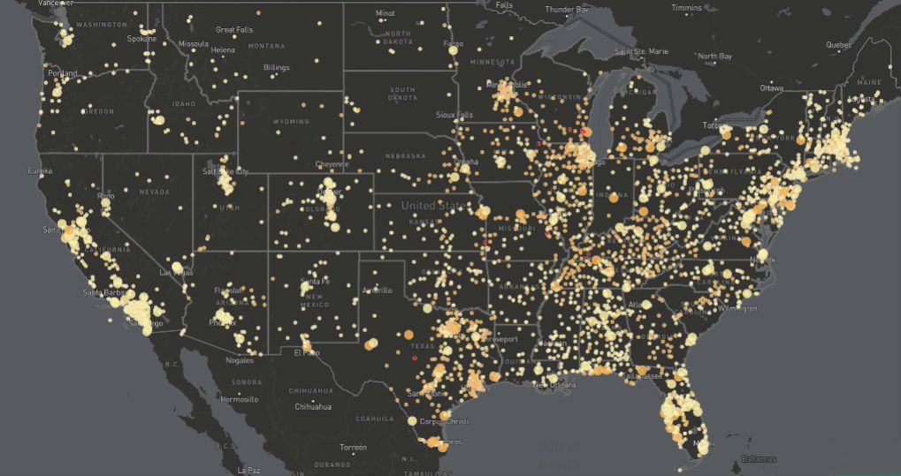
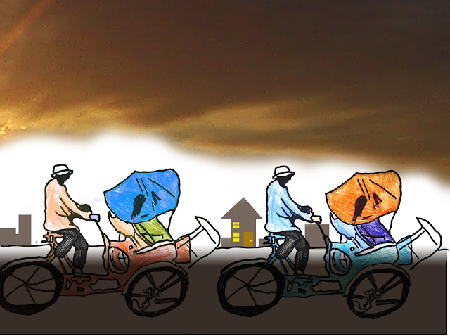

The COVID-19 pandemic gripped the world. Every nation on earth joined the fight against this vicious virus and every little contribution matters. The Internet also provides the means to effectively analytical tools to study disease and its spread, thereby helping us understand the consequences of a pandemic.
My Project describes Data Exploration of COVID-19 data. Using MySQL for the Analysis.
The dataset used for this project recorded cases from 1st of January 2020 to 4th of December 2021.

This Project describes visualizations of my previous project on COVID -19 Data Exploration, using Tableau for dashboards visualizations.

Data cleaning is a necessary step between data collection and data analysis. Raw primary data is often imperfect and needs to be prepared for prime quality analysis and overall replicability. In sporadic cases, the only preparation required is dataset documentation. However, in most cases, data cleaning requires significant energy and attention.
The goal of data cleaning is to scrub individual data points and to form the dataset simply usable and graspable for the analysis team and external users.
In this Project, I used python to clean the Nashville Housing Data.

Most people concur that the quality of your insights and analysis while utilizing data depends on the data you are using. In essence, bad data in equals bad analysis out. If you want to develop a culture inside your business centered around sound data decision-making, one of the most crucial first stages is data cleaning, also known as data cleansing and data scrubbing.
In this project I cleaned the Nashville Housing Data, using MySQL this time around.
In this project, I used Python to retrieve CoinMarketCap API data in JSON format, clean the dataset, analyze it, and finally show my findings.
I utilized Python to complete a project on data correlation. This project sought to identify correlations between several film features, including country of production, year of release, genre, studio, budget, gross earnings, and others.
Heatmaps, regplots, and scatter plots were utilized as visuals to provide a fast overview of the correlation present in this dataset.
Web scraping plays a bigger and bigger role as the digital economy grows.
APIs are not always accessible. Sometimes you have to manually scrape information from a website.
A method for gathering information and data from the internet is called web scraping (also known as data scraping). To allow for future manipulation and analysis, this data is often stored in a local file. Web scraping is similar to copying and pasting text from a webpage into an Excel spreadsheet but on a much smaller scale.
Web scraping has several uses, particularly in the area of data analytics. Companies that do market research use scrapers to collect information from online forums or social media for purposes like consumer sentiment analysis. To help competitor analysis, some people scrape data from product websites like Amazon or eBay.
I used Jumia, a pan-African technology firm with a marketplace, shipping service, and payment service, as the source of the data for my project. using Requests and BeautifulSoup.

The director of marketing believes Cyclistic’s future success depends on maximizing the number of annual memberships. Therefore, the stakeholders want to understand how casual riders and annual members use Cyclistic bikes differently. My Task was to help the marketing analyst team understand: How annual members and casual riders differ, Why casual riders would buy a membership and How digital media could affect their marketing tactics.
This project focuses on the study of bike consumers' purchase data, which is examined using Excel. This tool is used to acquire insights on bike purchases throughout Europe, North America, and the Pacific.
Bellabeat is a successful little business that makes high-tech items for women's health, but they have the potential to dominate the worldwide market for smart devices. Bellabeat's cofounder and chief creative officer, Urka Sren, thinks that studying fitness data from smart devices may help the business find new development prospects.
In order to better understand how consumers use their smart devices, I will concentrate on one of Bellabeat's products and evaluate smart device data. The company's marketing approach will then be guided by the insights gained.
In order to find trends related to delayed flights, a history of previous flight experiences, and an evaluation of the severity of flight cancellations and delays, I analyzed the Airline Delay dataset from Kaggle and populated it with some other data, such as airline carrier codes and names from Wikipedia. Next, examine the data for trends.
This dataset contains details on more than 1.9 million flights from 20 airlines and 303 locations from January to December 2008.
My father and his friend had an argument about airplane crashes a while ago; his friend claimed that the rate of airplane crashes was much higher in the 1980s compared to the 1950s (the period they were born), but my father disagreed, claiming that the rate of crashes was higher in the 1950s. They quickly pulled out their phones to check Google, but they couldn't get a precise answer, so they quickly changed the subject.
I've had problems explaining to my father what a data analyst actually does, so I took this as a chance to demonstrate my skills. I instantly put my current course on hold and went to Kaggle to get the data I would need for this analysis.
At the time this dataset was created on Kaggle, the original version was hosted by Open Data by Socrata, but unfortunately, that is not available anymore. The dataset contains data on airplane accidents involving civil, commercial, and military transport worldwide from 1908-09-17 to 2009-06-08.
The data was unclean and needed to be cleaned, so I used Excel to clean and transform it. The dataset was then imported into MySQL for analysis and then visualized with Tableau.
.png)
This Project describes visualizations of my previous project on Airplane Crashes Analysis, using Tableau for the dashboards' visualizations.
My visualization reveals that there were more plane crashes in the 1980s than in the 1950s. My father's "Aha!" moment was accompanied by the remark "Ouhuu," when he realized his friend had been correct all along.

This project's goal is to develop structured data from the lyrics of "God Did," the second song from DJ Khalid's 13th studio album, God Did, which also features Jay-Z, Rick-Ross, Lil' Wayne, John Legend, and Fridayy.
Aproko Doctor, an Executive Director of The100kclub, a Medical Doctor, and Amaka's hypeman, is one of my Twitter influencers. Actor, perfume collector, author, and ICFJ Knight In this research, I used phantombuster, an automated technique, to extract tweets from Dr. Chininso Egemba (@aproko doctor) on Twitter. His tweets were analyzed, a sentimental analysis was done, and a word cloud was created to display the most often appearing term in his tweets.

Each year, more than 70,000 developers share with stack overflow their learning and advancement strategies, tool preferences, and goals. Over 180 nations responded to the yearly developers survey, which examines all facets of the developer experience from learning to code to their preferred technology. The purpose of this project is to analyze the data to find great insights about the attitudes, tools, and environments that are shaping the art and practice of software today.